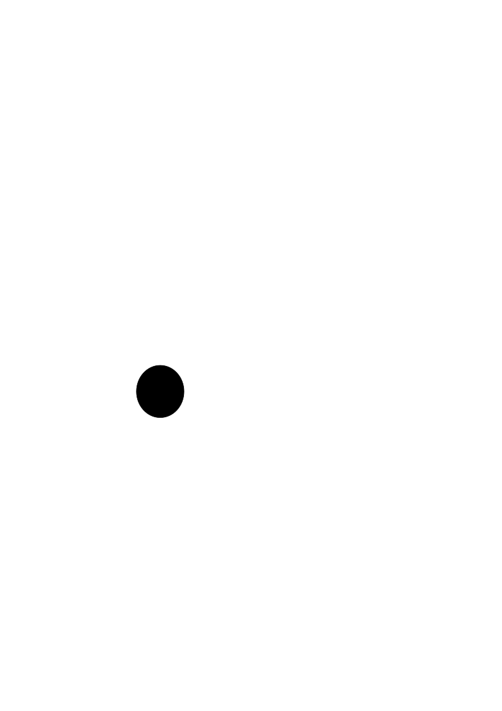
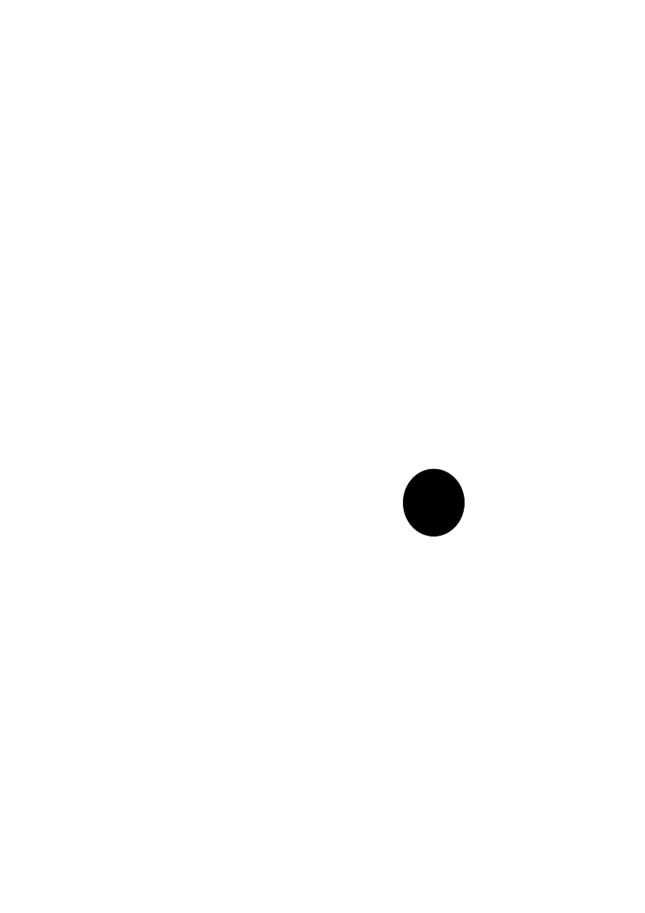
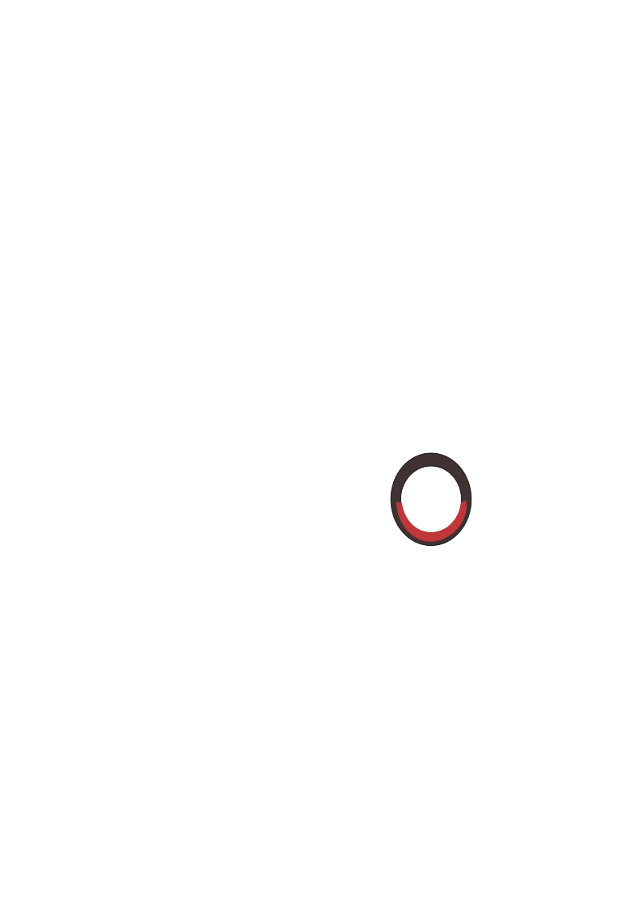
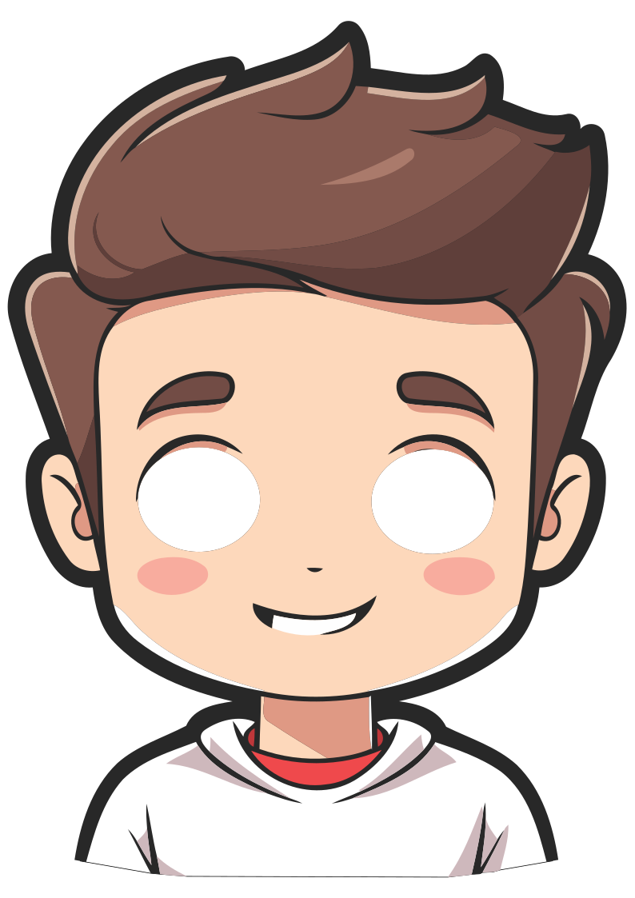
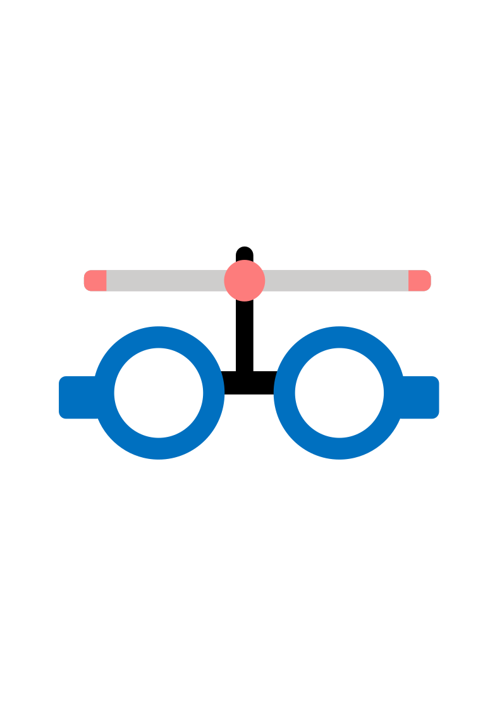
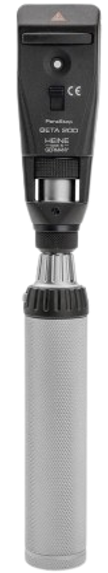

0.00
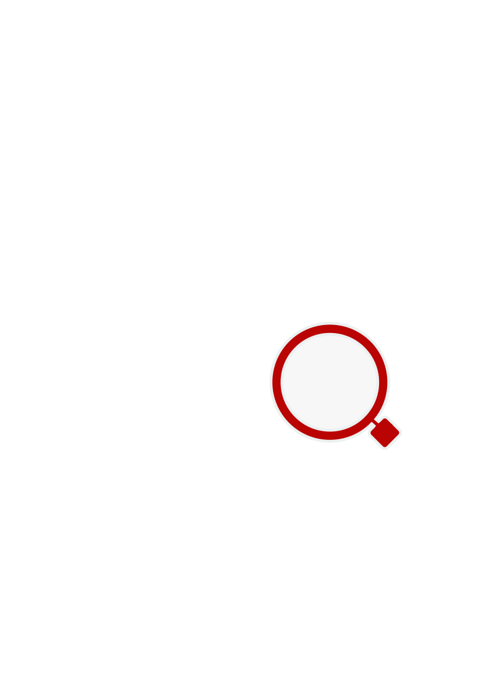
0.00
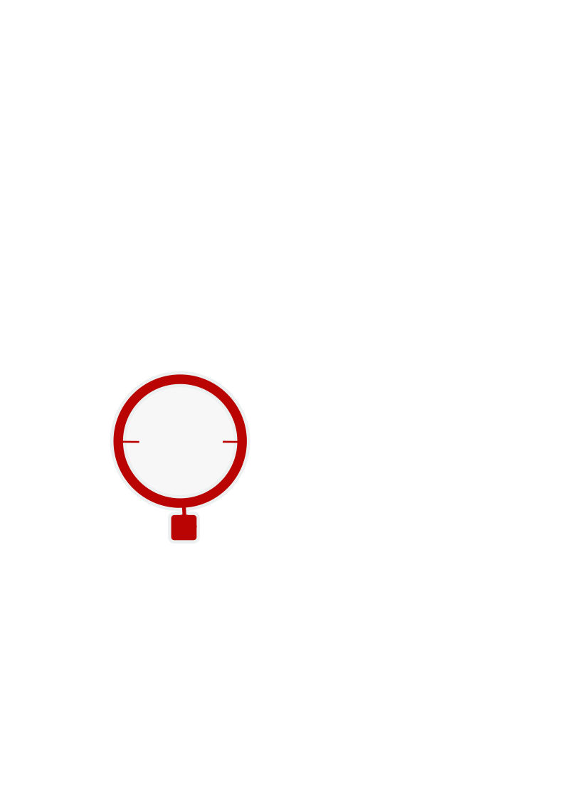
0.00

0.00
Retinoscopia Estática: DT 50cm
| Estatica | Esférico | Cilíndrico | Eixo |
|---|---|---|---|
| OD | 0,00 | -0,00 | 0 |
| OE | 0,00 | -0,00 | 0 |
| Primeira Força | Segunda Força |
|---|---|
| 0,00 | 0,00 |
| 0,00 | 0,00 |
Esférico
Cilíndrico
Eixo